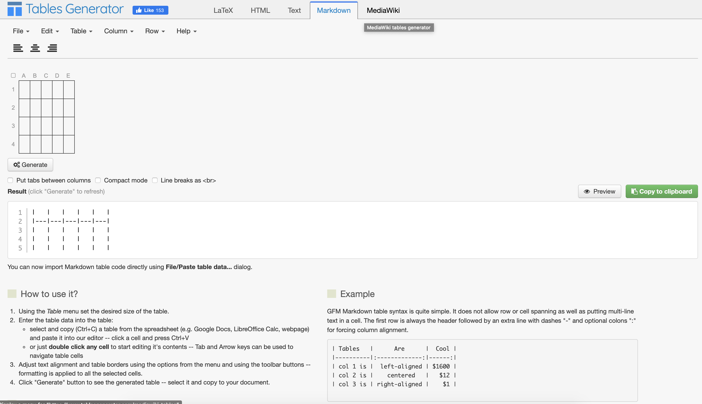

6. Tips and tricks¶
6.1. Main Objectives¶
The main purpose of this recipe is:
to provide tips and tricks to styling Markdown Documents, styling Mermaid Flowcharts and creating Markdown tables.
6.2. 1. HackMD help and Documentation¶
If you are new the Markdown and HackMD, you may find the following to link quite valuable in getting you off the ground
Consider this a reference point as it really provides excellent basis for a successfull interaction with HackMD and Markdown.
There are many such references online. This one is actually pretty good.
For instance, if you’d like add a warning site, you can do th e following:
:warning:
which should be rendered as this sign:
:warning:
6.3. 2. Styling Mermaid Flowchart:¶
you can check the mermaid documentation
We however provide some help with examples below
6.3.1. Problem 1: My text is long and the box becomes huge¶
use an html <br> tag to add a new line in the box, like so:
subgraph one
A(Building <br> Data <br> Catalogue):::box
classDef box font-family:avenir,font-size:14px,fill:#2a9fc9,stroke:#222,color:#fff,stroke-width:1px
end
6.3.2. Problem 2: how to change font, box color?¶
Use styling for the element using the classDef following by a short-name for this style.
The mermaid element (boxes) can then be suffixed with that short-name using the triple colon ::: as syntax marker.
subgraph one
A(Building <br> Data <br> Catalogue):::box
classDef box font-family:avenir,font-size:14px,fill:#2a9fc9,stroke:#222,color:#fff,stroke-width:1px
end
6.3.3. Problem 3: how to change the color of the connectors?¶
Use the linkStyle element.
:warning: make sure to provide the right number of connector as comma separated integers. If you get an error, it is often down to a discrepancy on this parameter.
The other argument are regular CSS like styling.
subgraph one
A(Building <br> Data <br> Catalogue):::box
A-->|define curation policies| B(Curation <br> Policies):::box
linkStyle 0 stroke:#2a9fc9,stroke-width:1px,color:#2a9fc9,font-family:avenir;
6.4. Problem 4: Struggling with Markdown Table¶
Formatting table can be a painful process.
Data Formats |
Terminologies |
Models |
|---|---|---|
To cut on the hardship, simply using the following online Markdown table generator

The component is intuitive to use and support copy and pate from say Excel for instance. Do the necessary tuning and then hit the Generate button to produce the Table in MarkDown format.
Then, click on the green ‘copy to clipboard button’, go back to your markdown editor or HackMD and paste.
job done!
6.5. Problem 5: How to resize images or figures:¶
When using HackMD, images can be inserting using the common toolbar and these are uploaded to imgur and the markdown looks like this:

but sizing is not properly supported which leads to rendering issues.
To solve the issue, the best course of action is to use an HTML div tag, which can be styled at will, as shown below:
<div> <img
src="/images/yI8TRNM.png"
alt="drawing"
style="width:750px;"
border="1px solid black"
align="top" />
</div>
Adjust the width element to resize the image to something satisfying.
6.6. How to create workflow figures¶
one may use the following mermaid syntax:
graph LR;
A[Data Acquisition] -->B(Raw Data)
B --> C{FAIR by Design}
C -->|Yes| D[Standard Compliant Data]
C -->|No| E[Vendor locked Data]
6.7. Authors:¶
Name |
Orcid |
Affiliation |
Type |
Elixir Node |
Credit Role |
|---|---|---|---|---|---|
University of Oxford |
|
Writing - Original Draft |
|||
University of Oxford |
|
Writing - Review & Editing, Funding acquisition |